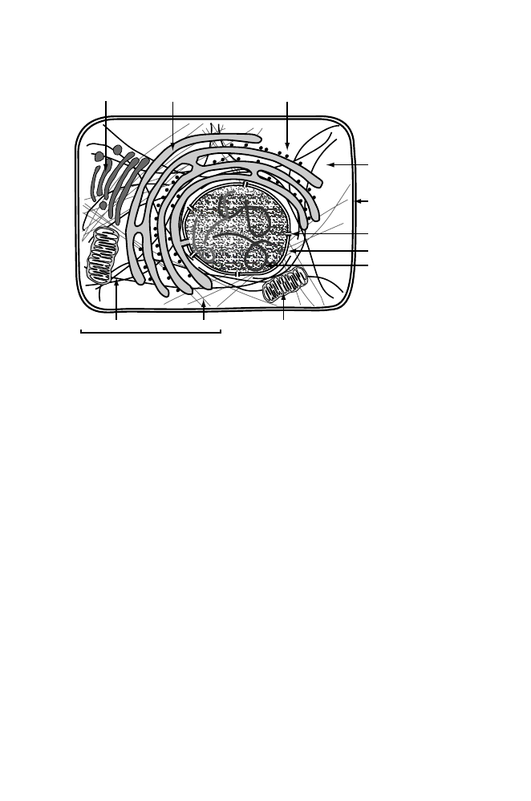

6
1 Biology in a Nutshell
Mitochondrion
Microfilaments
Microtubules
Cytoskeleton
Golgi
Endoplasmic reticulum
Ribosomes
Nuclear pore
Chromosome
Nuclear envelope
Plasma membrane
Cytoplasm
Fig. 1.2.
Some major components of an animal cell (not necessarily drawn to scale).
Some features (e.g., intermediate filaments, centrioles, peroxisomes) have not been
depicted. In multicellular organisms, cells are frequently in contact and communi-
cation with other cells in tissues, but intercellular junctions and contacts with the
extracellular matrix are not shown.
necessary metal ions in trace amounts. These substances flow into the cell
through the inner and outer membranes. From a single type of sugar and
inorganic precursors, a single bacterial cell can produce approximately 10
9
bacteria in approximately 20 hours;
E. coli
is also capable of importing other
organic compounds into the cell from the outside, including other types of
sugars and amino acids, when available.
To grow animal cells (e.g., human cells) in tissue culture, it is necessary to
supply not only glucose and inorganic salts but also about a dozen amino acids
and eight or more vitamins (plus other ingredients). Eukaryotic cells must
import a large variety of components from the outside environment (matter
flow). Because eukaryotic cells typically are 10 times larger in linear dimen-
sion than prokaryotic cells, their volumes are approximately 10
3
larger than
volumes of prokaryotic cells, and diffusion may not suffice to move molecules
into, out of, or through cells. Therefore, eukaryotic cells employ mechanisms
of protein and vesicle transport to facilitate matter flow.
Another defining characteristic of eukaryotes is the machinery required for
managing the genome during mitosis and meiosis (described below). Unlike
prokaryotes, eukaryotes package their DNA in highly ordered chromosomes,
which are condensed linear DNA molecules wrapped around octamers of pro-
teins called histones. Since there are often many chromosomes, mechanisms